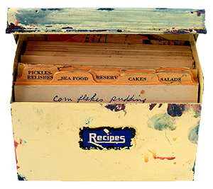
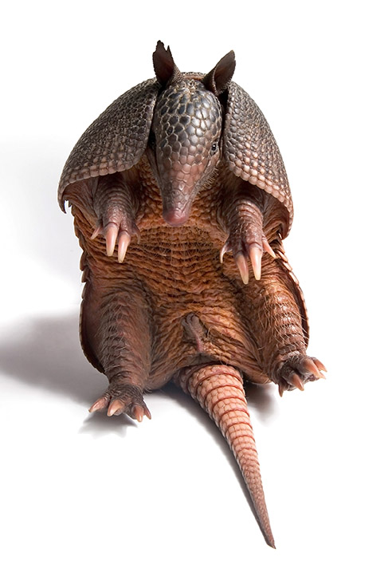

Recipes
Baked Armadillo
- 1 armadillo (or more if you have a crowd), removed from shell
- Salt
- Pepper
- 1/2 c. butter
An armadillo produces a lot of meat. The smaller ones are best for frying; the older ones need to be cooked slowly for a long time to ensure tenderness. After cutting carcass out of the shell, thoroughly wash meat. Salt and pepper armadillo. Stuff with chunks of apple and pineapple. Coat with butter and wrap in foil and place in roasting pan. Bake in a 325 degree oven until internal temperature reaches 180 degrees. Allow 30-45 minutes per pound. Allow 1/3 pound of meat per serving.